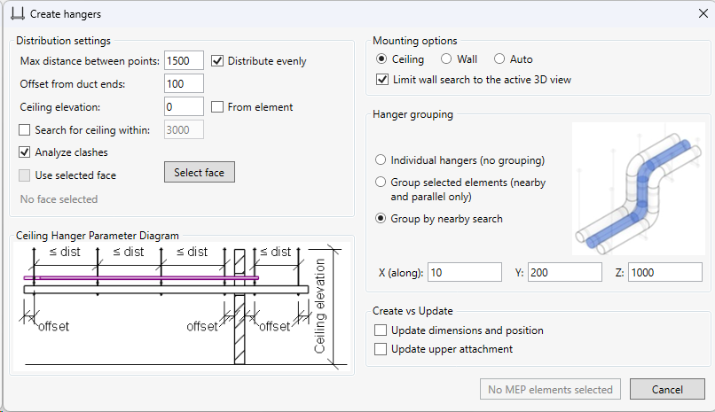

Create and Update Hangers
Table of contents
The Create hangers command places hangers for pipes, ducts, and cable trays, and updates existing hangers.
Hanger placement examples


Demo project with families: download Demo23.rvt.
Create hangers
1. Set up the view and select the services
Open a 3D view and select the services that need hangers. Then run Create hangers. You can select elements in the host model and individual elements from loaded Revit links.
To limit hanger placement to a specific area, set up the Section Box before running the command. Hanger points are distributed along the part of each service inside the crop region.
2. Configure distribution settings
Set the spacing and offsets in millimeters:
- Max distance between points — the maximum spacing between hanger points.
- Distribute evenly — places hangers at equal intervals without exceeding the maximum spacing. When this option is off, hangers are placed at the specified spacing and the remaining interval at one end is shorter.
- Offset from duct ends — the offset from the ends of the service.
3. Set the upper attachment
The following Distribution settings determine the surface or elevation that the rods of a ceiling hanger reach.
Specified elevation. Enter Ceiling elevation in millimeters. Without From element, this is an absolute elevation in model coordinates. With From element, the value is an offset from the service’s reference elevation: positive values are upward and negative values are downward.
Search for structure. Enable Search for ceiling within and set a positive upward search distance in millimeters. The command searches for the nearest surface of a floor, roof, or beam in the host model and loaded links, including elements hidden in the view. The left and right rods are checked separately. If no surface is found, the Ceiling elevation value is used with From element applied, so set this value even when search is enabled.
Selected face. Click Select face and select a face on an element in the host model or a loaded link for the hanger rods to reach.
A planar face is treated as an infinite plane, so the attachment can be calculated beyond its boundary. Vertical planar faces are not supported. For curved faces, the actual boundaries are taken into account.
4. Configure clash analysis
Analyze clashes checks hangers for intersections with services and assigns warning types to problematic hangers. The check includes the host model and loaded links, including hidden services and insulation.
When an intersection is found, the command assigns a warning type to the hanger:
- warning red — the rod of a primary hanger or a separate round fastener intersects a service.
- warning orange — the upper horizontal profile of a multi-tier assembly intersects a service.
When creating hangers, the lower profile and round fasteners inside a shared assembly are not checked. Therefore, the absence of a warning does not mean the entire assembly is clash-free. Rod checks do not account for rod thickness, and profile checks use the service’s vertical extents.
The IDs of intersecting elements are added to the hanger’s comments. The ID of the link instance is written before the element IDs; 0 denotes the host model. Use these IDs to locate the problematic elements. The family must contain types with warning red and warning orange in their names for the corresponding warnings to be displayed.
5. Choose mounting options
- Ceiling — ceiling-mounted support.
- Wall — wall-mounted support for pipes and round ducts.
- Auto — automatically chooses wall or ceiling mounting based on service direction and nearby walls.
For services inclined at least 15° from horizontal, wall mounting is selected. If no wall is found, the support is still created using a fallback distance from the wall.
For horizontal or shallower services, wall mounting is selected only if a nearby wall is found that is parallel to the route in plan within 5°. The allowed distance from the service axis to the wall is 1000 mm plus half the larger outside dimension of its cross-section. If no suitable wall is found, ceiling mounting is selected.
The wall is checked near the midpoint of the visible service segment. When a Section Box is active, the midpoint of the segment inside the crop region is used; the selected mounting method applies to the entire element.
Limit wall search to the active 3D view restricts the wall search to the active view so hidden walls do not affect the choice of wall mounting. When this option is off, walls outside the active view are also considered. This setting does not affect the search for structure above a ceiling hanger.
6. Choose hanger grouping
Choose Individual hangers (no grouping) to create separate hangers for each selected element. Nearby services are not included in a shared support.
Choose Group selected elements (nearby and parallel only) when shared hangers should support only the services you selected in advance. The selected elements must be parallel and close to each other (< 3 m).
In this mode, hangers are distributed along the shortest visible segment of the selected services. If one service ends before the others, it is no longer included in the shared support beyond its end. Unselected neighboring services are ignored.
Choose Group by nearby search to automatically include nearby services in shared hangers. Hanger locations are determined from the selected elements, and neighboring services are searched for near each hanger point. If no suitable neighbors are found, a separate hanger is created. The services supported can vary from one hanger to another.
For Group by nearby search, set the search area in millimeters:
- X (along) — along the service.
- Y — across the service.
- Z — vertically.
The X/Y/Z fields are used only with Group by nearby search.
7. Create the hangers
Click Create. Check the hanger locations and their attachment to the structure. For shared supports, check which services they include. If warning types appear, use the IDs in the hanger comments to find the intersecting elements.

Update existing hangers
1. Select the hangers
In a 3D view, select existing hangers in the Structural Connections category, then open Create hangers.
When updating dimensions and position, the selection determines which services are used to recalculate the hangers:
- Hangers only: the nearest suitable service is found for each hanger within the search area.
- Hangers and services: dimensions and position are calculated from the selected group without searching for neighboring services. Hanger grouping options do not affect the group.
2. Configure attachments and clash analysis
To change the upper attachment, set the elevation, structure search, or selected face in Distribution settings, as when creating hangers. When updating with From element, the offset is measured from the hanger’s position after its dimensions and position have been recalculated, if that update is enabled.
Analyze clashes checks the selected hangers again and updates their warnings. If there are no longer any clashes, the hanger is assigned its regular type. Other comment text is preserved. Turn off analysis if you want to change the geometry or attachment without rechecking existing warning types and clash records.
Unlike hanger creation, updates check the horizontal profiles of all selected rectangular hangers, including the lower profiles. If both a rod and a profile intersect an element, warning red is assigned.
3. Choose what to update — Create vs Update
- Update dimensions and position — recalculate dimensions and position from the services.
- Update upper attachment — recalculate the upper attachment using the new elevation, structure search, or selected-face settings.
Dimensions and the upper attachment can be updated independently or together.
4. Run the update
Click Update. The selected hangers are modified without being recreated; additional supports for extra tiers are not added. Check the dimensions, position, and upper attachment, and review any remaining warnings if clash analysis is enabled.